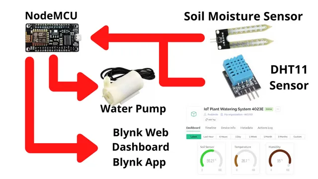
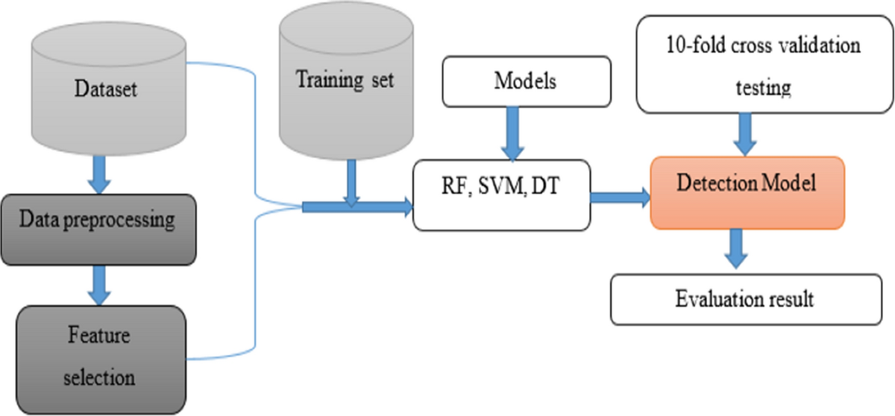

Major Projects

🔆 Smart Streetlight using Mesh Network
IoT-based system using ESP modules, PIR, and LDR sensors for automatic streetlight control and communication among lamp units.

💧 Smart Plant Watering System
STM32F401RE-based automation that monitors soil moisture and controls water flow using relays and sensors with LCD feedback.

🧠 CKD Prediction using Machine Learning
Applied Logistic Regression, Decision Tree, and Random Forest to predict Chronic Kidney Disease using patient datasets.